Aristotle's on the Soul
Aristotle
0960287094
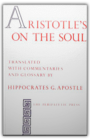
Nicomachean Ethics
Aristotle
0872204642
Building on the strengths of the first edition, the second edition of the Irwin Nicomachean Ethics features a revised translation (without extensive editorial intervention), expanded notes (including a summary of the argument of each chapter), an expanded Introduction, and a revised glossary.Terence Irwin is Susan Linn Sage Professor of Philosophy, Cornell University.
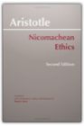
Aristotle's Metaphysics
Aristotle, H. G. Apostle
0960287019
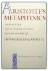
The Iliad
Alston Hurd; Perry, William G. (translators) Homer; Chase
B000X1FBA0
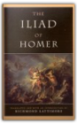
Readings in Ancient Greek Philosophy: From Thales to Aristotle
S. Marc Cohen, Patricia Curd, C. D. C. Reeve
0872203123
The second edition of this book builds on those strengths that have made the first edition the leading anthology for the teaching of ancient philosophy: it's additional 100 pages offer an even richer selection of Presocratic fragments, testimonia and dialogues of Plato — all in authoritative translations, skilfully edited and annotated for introductory students. Among the revisions is the addition — in its entirety — of Republic, as well as the death scene from Phaedo; nothing from the first edition has been deleted.
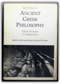
Alfred Tarski: Life and Logic
Anita Burdman Feferman, Solomon Feferman
0521802407
Alfred Tarski, one of the greatest logicians of all time, is widely thought of as 'the man who defined truth'. His mathematical work on the concepts of truth and logical consequence are cornerstones of modern logic, influencing developments in philosophy, linguistics and computer science. Tarski was a charismatic teacher and zealous promoter of his view of logic as the foundation of all rational thought, a bon-vivant and a womanizer, who played the 'great man' to the hilt. Born in Warsaw in 1901 to Jewish parents, he changed his name and converted to Catholicism, but was never able to obtain a professorship in his home country. A fortuitous trip to the United States at the outbreak of war saved his life and turned his career around, even while it separated him from his family for years. By the war's end he was established as a professor of mathematics at the University of California, Berkeley. There Tarski built an empire in logic and methodology that attracted students and distinguished researchers from all over the world. From the cafes of Warsaw and Vienna to the mountains and deserts of California, this first full length biography places Tarski in the social, intellectual and historical context of his times and presents a frank, vivid picture of a personally and professionally passionate man, interlaced with an account of his major scientific achievements.
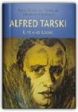
The Penguin Gandhi Reader
Mohandas K. Gandhi, Mahatma Gandhi, Rudrangshu Mukherjee
0140236864
The essential writings of one of the greatest statesmen and morally influential figures of the twentieth century Mohandas Karamchand Gandhi (1869-1948) was born in Porbander on the western coast of India. His childhood and early upbringing were undistinguished but as an adult he initiated and was involved in a series of novel forms of peaceful protests which established him as one of the most important leaders of the twentieth century and one whose message and relevance transcended national boundaries.This meticulously edited volume culled from the Collected Works of Gandhi contains a representative selection of his writings focusing on themes which were central to Gandhi s philosophy.
The reader is divided into eight sections and discusses the following in detail: Gandhiji s complete rejection of what is known as modern civilization together with its materialistic nature; the doctrines of swaraj and swadeshi, which meant more to him than mere independence for the British; the creed of non-violence, the centrepiece of his political theory; his role in mass movements particularly in the Non-Co-operation Civil Disobedience and Quit India movements; his views on women and sex; his arguments against caste and untouchability; his thoughts on capitalism and socialism; his commitment to a united India; his firm belief in religious tolerance and finally, his lifelong struggle towards the attainment of both Home Rule and Self Rule.
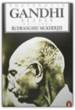
Descartes' Metaphysical Physics
Daniel Garber
0226282198
In this first book-length treatment of Descartes' important and influential natural philosophy, Daniel Garber is principally concerned with Descartes' accounts of matter and motion—the joint between Descartes' philosophical and scientific interests. These accounts constitute the point at which the metaphysical doctrines on God, the soul, and body, developed in writings like the Meditations, give rise to physical conclusions regarding atoms, vacua, and the laws that matter in motion must obey.Garber achieves a philosophically rigorous reading of Descartes that is sensitive to the historical and intellectual context in which he wrote. What emerges is a novel view of this familiar figure, at once unexpected and truer to the historical Descartes.
The book begins with a discussion of Descartes' intellectual development and the larger project that frames his natural philosophy, the complete reform of all the sciences. After this introduction Garber thoroughly examines various aspects of Descartes' physics: the notion of body and its identification with extension; Descartes' rejection of the substantial forms of the scholastics; his relation to the atomistic tradition of atoms and the void; the concept of motion and the laws of motion, including Descartes' conservation principle, his laws of the persistence of motion, and his collision law; and the grounding of his laws in God.
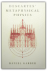
Machiavelli; the Prince
Christian. Gauss
B000MOOZWS
The famous analysis of Statesmanship and Power.
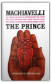
Leviathan: With Selected Variants from the Latin Edition of 1668
Thomas Hobbes, Edwin Curley
0872201775
This new edition of Hobbe's masterpiece is uniquely suited to meet the needs of both student and scholar. It offers a brilliant introduction by Edwin Curley, modernised spelling and punctuation of the text, and a key annotative feature found in no other edition: the inclusion, along with historical and interpretive notes, of the most significant variants between the English version of 1651 and the Latin version of 1668. A glossary of seventeenth century English terms and indexes of persons, subjects, and scriptural passages help make this the most thoughtfully conceived edition of Leviathan available.
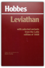
The Iliad
Homer
0140445927
Newly updated by D. C. H. Rieu, son of E. V. RieuOne of the foremost achievements in Western literature, Homer's Iliad tells the story of the darkest episode of the Trojan War. At its center is Achilles, the greatest warrior-champion of the Greeks, and his conflict with his leader Agamemnon. Interwoven in the tragic sequence of events are powerfully moving descriptions of the ebb and flow of battle, the besieged city of Ilium, the feud between the gods, and the fate of mortals.
@RageAgainstTheAchaean Pissed. I am so, so very pissed.
First I have to go to this beach. Then I have to kill all these dudes. And NOW – now! This prick stole my biscuit. Who does that? Am I right?
Can’t resolve this problem on my own – calling Mom!
From Twitterature: The World's Greatest Books in Twenty Tweets or Less
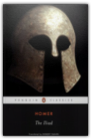
Hellenistic Philosophy: Introductory Readings
Brad Inwood
0872203786
Enlarged to provide nearly a hundred pages of additional material, this new edition offers the first English translation of the account of Stoic ethics by Arius Didysmus, substantial new sources on Epicureanism, Stoicism, and Scepticism, expanded representation of Plutarch and Cicero, and a fuller representation of papyrological evidence. The editors maintain the consistency and accuracy that distinguished their translations in the first edition, while regrouping some material into larger, more thematically connected passages. This edition is further enhanced by a new more spacious page design.
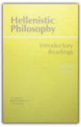
Classical Thought
Terence Irwin
0192891774
Covering over 1000 years of classical philosophy from Homer to Saint Augustine, this accessible, comprehensive study details the major philosophies and philosophers of the period—the Pre-Socratics, Socrates, Plato, Aristotle, Stoicism, Epicureanism, and Neoplatonism. Though the emphasis is on questions of philosophical interest, particularly ethics, the theory of knowledge, philosophy of mind, and philosophical theology, Irwin includes discussions of the literary and historical background to classical philosophy as well as the work of other important thinkers—Greek tragedians, historians, medical writers, and early Christian writers. The most complete one-volume introduction to ancient philosophy available, the book will be an invaluable survey for students of philosophy and classics and general readers.
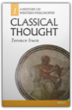
Religion within the Limits of Reason Alone
Immanuel Kant
0061300675
A Monumental Figure of Western Thought Wrestles with the Question of GodImmanuel Kant (1724-1804) is one of the most influential philosophers in the history of Western philosophy. His contributions have had a profound impact on almost every philosophical movement that followed him.
Kant's teachings on religion were unorthodox in that they were based on rationality rather than revelation. Though logically proving God's existence might be impossible, it is morally reasonable to "act as if there be a God." His strictly rational approach was considered so scandalous that the King of Prussia forbid him to teach or write further on religious subjects, which Kant obeyed until the king's death.
A work of major importance in the history of Western religious thought, Religion Within the Limits of Reason Alone represents a great philosopher's attempt to spell out the form and content of a type of religion grounded in moral reason and meeting the needs of an ethical life.
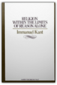
Kant: Groundwork of the Metaphysics of Morals
Immanuel Kant, Mary Gregor
0521626951
Immanuel Kant's Groundwork of the Metaphysics of Morals ranks alongside Plato's Republic and Aristotle's Nicomachean Ethics as one of the most profound and influential works in moral philosophy ever written. In Kant's own words its aim is to search for and establish the supreme principle of morality, the categorical imperative. This edition presents the acclaimed translation of the text by Mary Gregor, together with an introduction by Christine M. Korsgaard that examines and explains Kant's argument.
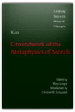
Locke: Two Treatises of Government
John Locke, Peter Laslett
0521357306
This is a new revised version of Dr. Laslett's standard edition of Two Treatises. First published in 1960, and based on an analysis of the whole body of Locke's publications, writings, and papers. The Introduction and text have been revised to incorporate references to recent scholarship since the second edition and the bibliography has been updated.
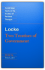
A Letter Concerning Toleration: Humbly Submitted
John Locke, James Tully
091514560X
Ever since humankind raised its head toward the heavens in search of universal understanding and spiritual fulfilment, wars, pogroms, persecution, prejudice, and contempt have been the means of resolving the many and varied disagreements that have arisen over matters religious. In his "Letter Concerning Toleration", Locke offers a compelling plea for freedom of conscience and religious expression. He outlines the limits of social and political incursion into the realm of personal belief or non-belief, discusses the dangers of mixing church and state, and strikes hard at those who would use the power of the state to fulfil religious or political goals.Rational persuasion is always to be encouraged in the hope that wayward souls may find a moral direction in life, but the use of force in such matters is unwarranted and unacceptable. Locke also addresses the question of denominational infighting and relations among the major religions. Talk of heresy and schism should be set aside in favour of understanding and co-operation to achieve mutually desirable social ends.
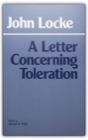
Persuasions of the Witch's Craft: Ritual Magic in Contemporary England
T. M. Luhrmann
0674663241
To find out why reasonable people are drawn to the seemingly bizarre practices of magic and witchcraft, Luhrmann immersed herself in the arcane world of Londoners who call themselves magicians. Her report is as fascinating as the esoteric world itself.
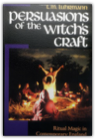
The Prince and The Discourses
Niccolo Machiavelli
0075535777
Translated by Luigi Ricci, Revised by E.R.P. Vincent, Introduction by Max Lerner
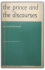
The Prince: Second Edition
Niccolo Machiavelli
0226500446
The most famous book on politics ever written, The Prince remains as lively and shocking today as when it was written almost five hundred years ago. Initially denounced as a collection of sinister maxims and a recommendation of tyranny, it has more recently been defended as the first scientific treatment of politics as it is practiced rather than as it ought to be practiced. Harvey C. Mansfield's brilliant translation of this classic work, along with the new materials added for this edition, make it the definitive version of The Prince, indispensable to scholars, students, and those interested in the dark art of politics.This revised edition of Mansfield's acclaimed translation features an updated bibliography, a substantial glossary, an analytic introduction, a chronology of Machiavelli's life, and a map of Italy in Machiavelli's time.
"Of the other available [translations], that of Harvey C. Mansfield makes the necessary compromises between exactness and readability, as well as providing an excellent introduction and notes."—Clifford Orwin, The Wall Street Journal
"Mansfield's work . . . is worth acquiring as the best combination of accuracy and readability."—Choice
"There is good reason to assert that Machiavelli has met his match in Mansfield. . . . [He] is ready to read Machiavelli as he demands to be read—plainly and boldly, but also cautiously."—John Gueguen, The Sixteenth Century Journal
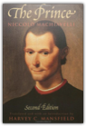
Medieval Russia, 980-1584
Janet L. B. Martin
0521368324
This book is a concise and comprehensive narrative history of Russia from 980 to 1584. Presenting developments in social and economic areas, as well as in political history, foreign relations, religion and culture, Janet Martin breaks away from the traditional view of Old Russia as a static, immutable culture, and emphasizes the "dynamic" and changing qualities of Russian society. She develops lines of argument that lead to clear conclusions concerning how and why the states and society of the lands of the Rus' assumed the forms and characteristics that they did.
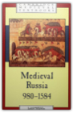
The Marx-Engels Reader
Karl Marx, Friedrich Engels, Robert C. Tucker
039309040X
This revised and enlarged edition of the leading anthology provides the essential writings of Marx and Engels—those works necessary for an introduction to Marxist thought and ideology.
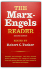
On Liberty and Other Essays
John Stuart Mill, John Gray
0192833847
Collected here in a single volume for the first time, On Liberty, Utilitarianism, Considerations on Representative Government, and The Subjection of Women show John Stuart Mill applying his liberal utilitarian philosophy to a range of issues that remain vital today—the nature of ethics, the scope and limits of individual liberty, the merits of and costs of democratic government, and the place of women in society. In his Introduction John Gray describes these essays as applications of Mill's doctrine of the Art of Life, as set out in A System of Logic. Using the resources of recent scholarship, he shows Mill's work to be far richer and subtler than traditional interpretations allow.
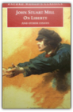
Plato's Parmenides: The Conversion of the Soul
Mitchell H. Miller
0271008032
The Parmenides is arguably the pivotal text for understanding the Platonic corpus as a whole. Miller offers a new reading that takes as its key the closely constructed dramatic context and mimetic irony of the dialogue."Miller's work is a splendid achievement— original, thorough, clear, deep and exciting. He blends literary sensitivity with analytical precision in a way that helps with just about everything in one of Plato's most obscure and difficult dialogues." —-Edward N. Lee, University of California, San Diego"Miller has much going for him. He has a deep understanding of Greek.... He is careful in following the arguments, and fresh and original in treating them.... We cannot do without Cornford and Allen; we now need Miller alongside them." —-John Ferguson, The Heythrop Journal"The Parmenides is one of the most obscure works in the history of Western thought. Yet this dialogue is of central importance in the development of Plato's theory of Forms, and we should be grateful to Miller for light in the darkness.... highly recommended." —-H.L. Shapiro, Choice"...one can appreciate why Miller's book is a success; he offers an interpretation according to which the dialogue is a unified piece of work that marks a turning point in Plato's metaphysics. Miller's writing is lucid and straightforward.... There are sustained discussions of Cornford, Cherniss, Vlastos, Owen, Brumbaugh, Allen, and Sayre in the footnotes. There is little doubt that the book represents a significant contribution." —-Kenneth Seeskin, Philosophy and Literature"Miller's commentary is an impressive achievement, combining extensive scholarship with unusual sensitivity to Plato's nuances, both literary and discursive. Both for its imaginative interpretation of the larger issues, and its careful analysis of the details, it will be of great value to anyone with an interest in this bewildering dialogue." —-Kenneth Dorter, Canadian Philosophical Reviews

The Holy Bible: King James Version
Thomas Nelson
0529064634
An inexpensive paperback Bible priced for purchase in large quantities.
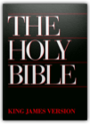
Nietzsche: The Birth of Tragedy and Other Writings
Friedrich Nietzsche, Raymond Geuss, Ronald Speirs
0521639875
The Birth of Tragedy is one of the seminal philosophical works of the modern period. The theories developed in this relatively short text have had a profound influence on the philosophy, literature, music and politics of the twentieth century. This edition presents a new translation by Ronald Speirs and an introduction by Raymond Geuss that sets the work in its historical and philosophical context. The volume also includes two essays on related topics that Nietzsche wrote during the same period.
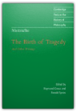
On the Genealogy of Morals and Ecce Homo
Friedrich Nietzsche, Walter Kaufmann
0679724621
The great philosopher's major work on ethics, along with ECCE HOMO, Nietzche's remarkable review of his life and works. Translated by Walter Kaufmann.
FOR LOVE OF COUNTRY
Martha Craven Nussbaum, Joshua Cohen
0807043133
For Love of Country is a rare forum: a real conversation among some of our most prominent intellectuals about an issue of urgent public importance. At the center of this lively and utterly readable debate book is Martha Nussbaumís passionate argument against patriotism. At a time when our connections and obligations to the rest of the world grow only stronger, we should reject patriotism as a parochial ideal, she says, and instead see ourselves first of all as "citizens of the world."Fifteen writers and thinkers respond to Nussbaum's piece in short, hard-hitting, often brilliant essays, acknowledging the power of her argument, but often defending patriotisms and other local commitments with an eloquence equal to Nussbaum's. We hear from an astonishing range of writers from Robert Pinsky to Cornel West to Gertrude Himmelfarb to Sissela Bok.
This is contemporary American philosophy at its most relevant and readable. At a time when debates about crises in Bosnia or Somalia are dominated by politicians and military leaders, here are the voices of philosophers and poets, literary scholars and historians. A book of surprising insights and diversity, For Love of Country is especially written for a wide audience and is sure to spark debate.
Russia under the Old Regime: Second Edition
Richard Pipes
0140247688
Harvard Professor of Russian History Richard Pipes traces the evolution of the Russian state from the ninth century to the 1800s. Pipes analyzes the political behavior of the principal social groupingspeasantry, nobility, middle class, and clergyand their failure to stand up to the increasing absolutism of the czar. This is considered by many to be the definitive book about Russian society before the revolution. 3 maps.
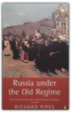
Meno
Plato
0915144247
(Aris and Phillips 1985)
Plato Symposium
Plato
0872200760
'A model of the kind of text one needs for lecture courses: the translation is extremely readable and made even more accessible by intelligent printing decisions (on dividing the text, spacing for clarification, etc.); the notes are kept to a minimum but appear when they are really needed for comprehension and are truly informative. And the introduction admirably presents both basic information and a sense of current scholarly opinion' - S G Nugent, Princeton University.
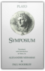
The Republic Of Plato: Second Edition
Plato
0465069347
Long regarded as the most accurate rendering of Plato’s Republic that has yet been published, this widely acclaimed work is the first strictly literal translation of a timeless classic. This second edition includes a new introduction by Professor Bloom, whose careful translation and interpretation of The Republic was first published in 1968. In addition to the corrected text itself there is also a rich and valuable essayas well as indexeswhich will better enable the reader to approach the heart of Plato’s intention.
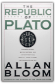
Parmenides
Plato
087220328X
This new translation of what may be Plato's most elusive dialogue provides a faithful rendering of the Greek text without sacrificing clarity in English. Gill's extensive introduction explores and elucidates the dialogue's central themes and offers a compelling interpretation of issues current in scholarly debates on the Parmenides. Also included are helpful notes, an Analysis of the deductions in Part II, and a select bibliography.
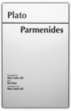
Four Texts on Socrates: Plato's "Euthyphro," "Apology of Socrates," "Crito," and Aristophanes' "Clouds"
Plato, Aristophanes
0801485746
Widely adopted for classroom use, this book offers translations of four major works of ancient Greek literature which treat the life and thought of Socrates, focusing particularly on his trial and defense (three dialogues by Plato: Euthyphro, Apology of Socrates, and Crito) and on the charges against Socrates (Aristophanes' comedy Clouds).This is the only collection of the three Platonic dialogues that also includes Clouds, a work that is fundamental for understanding the thought of Socrates in relation to the Athenian political community and to Greek poetry. Thomas G. West's introduction provides an overview of the principal themes and arguments of the four works. There are extensive explanatory notes to the translations.
In their translations, the Wests capture successfully the simplicity and vigor of straightforward Greek diction. They strive for as high a degree of accuracy as possible, subordinating concerns for elegance and smoothness to the goal of producing the most faithful and most reliable English versions of these texts. For this new edition, Thomas West has revised the introduction and updated the annotated bibliography, which includes the best of the secondary literature on Socrates and on the texts included in this book.
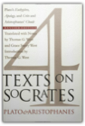
Plato: Complete Works
Plato, John M. Cooper, D. S. Hutchinson
0872203492
Outstanding translations by leading contemporary scholars — many commissioned especially for this volume — are presented here in the first single edition to include the entire surviving corpus of works attributed to Plato in antiquity. In his introductory essay, John Cooper explains the presentation of these works, discusses questions concerning the chronology of their composition, comments on the dialogue form in which Plato wrote, and offers guidance on approaching the reading and study of Plato's works. Also included are concise introductions to each translation, meticulous annotation designed to serve both scholar and general reader, and a comprehensive index. This handsome volume offers fine paper and a high-quality Smyth-sewn cloth binding in a sturdy elegant edition.
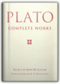
Phaedrus
Plato, Alexander Nehamas, Paul Woodruff
0872202208
Plato's dialogue Phaedo portrays Socrates in prison awaiting execution and discussing with his friends the fate of the soul after death. In this edition, consisting of introduction, text and commentary, Professor Rowe guides the reader through the difficulties—linguistic, literary and philosophical—of individual passages and of the dialogue as a whole. The comparative beginner is not neglected, but the commentary is intended for any student, classical scholar, or philosopher with an interest in the close reading of Plato.
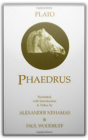
Cratylus
Plato, C. D. C. Reeve
0872204162
The Cratylus, Plato's sole dialogue devoted to the relation between language and reality, is acknowledged to be one of his masterpieces. But owing to its often enigmatic content no more than a handful of passages from it have played a part in the global evaluation of Plato's philosophy. This new English translation by C D C Reeve is the first since 1926, and incomparably the most helpful and accessible now available. It opens up the Cratylus to all philosophically interested readers, as well as to cultural historians and to those whose primary concern is the history of linguistics. The full and lucid introduction does much to illuminate the internal dynamic of this important text and to explain its place within Plato's oeuvre.
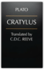
Theaetetus
Plato, Bernard Williams, Myles Burnyeat
0872201589
M J Levett's elegant translation of "Theaetetus", first published in 1928, is here revised by Myles Burnyeat to reflect contemporary standards of accuracy while retainingn the style, imagery, and idiomatic speech for which the Levett translation is unparalleled. Bernard Williams' concise introduction illuminates the powerful argument of this complex dialogue and illustrates its connections to contemporary metaphysical and epistemological concerns.
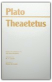
The Essential Plotinus: Representative Treatises from the Enneads
Plotinus, Elmer O'Brien
0915144093
'The Essential Plotinus is a lifesaver. For many years my students in Greek and Roman Religion have depended on it to understand the transition from antiquity to the Middle Ages. The translation is crisp and clear, and the excerpts are just right for an introduction to Plotionus's many-layered view of the world and humankind's place in it' - F. E. Romer, University of Arizona
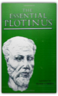
Methods of Logic
W. V. Quine
0674571762
This widely used textbook of modern formal logic now offers a number of new features. Incorporating updated notations, selective answers to exercises, expanded treatment of natural deduction, and new discussions of predicate- functor logic and the affinities between higher set theory and the elementary logic of terms, Quine's new edition will serve admirably both for classroom and for independent use.
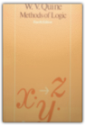
The Law of Peoples: with "The Idea of Public Reason Revisited"
John Rawls
0674005422
This book consists of two parts: the essay "The Idea of Public Reason Revisited," first published in 1997, and "The Law of Peoples," a major reworking of a much shorter article by the same name published in 1993. Taken together, they are the culmination of more than fifty years of reflection on liberalism and on some of the most pressing problems of our times by John Rawls."The Idea of Public Reason Revisited" explains why the constraints of public reason, a concept first discussed in Political Liberalism (1993), are ones that holders of both religious and non-religious comprehensive views can reasonably endorse. It is Rawls's most detailed account of how a modern constitutional democracy, based on a liberal political conception, could and would be viewed as legitimate by reasonable citizens who on religious, philosophical, or moral grounds do not themselves accept a liberal comprehensive doctrine—such as that of Kant, or Mill, or Rawls's own "Justice as Fairness," presented in A Theory of Justice (1971).
The Law of Peoples extends the idea of a social contract to the Society of Peoples and lays out the general principles that can and should be accepted by both liberal and non-liberal societies as the standard for regulating their behavior toward one another. In particular, it draws a crucial distinction between basic human rights and the rights of each citizen of a liberal constitutional democracy. It explores the terms under which such a society may appropriately wage war against an "outlaw society," and discusses the moral grounds for rendering assistance to non-liberal societies burdened by unfavorable political and economic conditions.
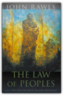
Justice as Fairness: A Restatement
John Rawls, Erin Kelly
0674005112
This book originated as lectures for a course on political philosophy that Rawls taught regularly at Harvard in the 1980s. In time the lectures became a restatement of his theory of justice as fairness, revised in light of his more recent papers and his treatise Political Liberalism (1993). As Rawls writes in the preface, the restatement presents "in one place an account of justice as fairness as I now see it, drawing on all [my previous] works." He offers a broad overview of his main lines of thought and also explores specific issues never before addressed in any of his writings.Rawls is well aware that since the publication of A Theory of Justice in 1971, American society has moved farther away from the idea of justice as fairness. Yet his ideas retain their power and relevance to debates in a pluralistic society about the meaning and theoretical viability of liberalism. This book demonstrates that moral clarity can be achieved even when a collective commitment to justice is uncertain.
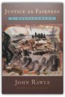
Get Your War on
David Rees
188712876X
The only anecdote to the saccharine 9/11 retrospectives flooding bookshops, this collection of hilarious comic strips - cleverly mixing clip-art of office workers with hip-hop inspired profanities - gives a platform to the fear, frustration, anger and distrust that many Americans and the rest of the world feel concerning U.S. foreign policy and big business in the post-September 11 world.
The First and Second Discourses
Jean-Jacques Rousseau
0312694407
One of the most respected translations of this key work of 18th-century philosophy, this text includes a brief introduction to the two works as well as abundant notes that range from simple explanations to speculative interpretations.
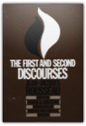
Rousseau: 'The Social Contract' and Other Later Political Writings
Jean-Jacques Rousseau, Victor Gourevitch
0521424461
Volume II contains the later writings such as the Social Contract. The Social Contract was publicly condemned on publication causing Rousseau to flee. In exile he wrote both autobiographical and political works.
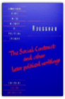
Political Writings
Saint, Bishop of Hippo Augustine, Michael W. Tkacz
0872202100
Taken from the complete works of St. Augustine, this collection has been arranged so as to give readers an organized, comprehensive view of the great African saint's political ideas. Included is an interpretive analysis by Dino Bigongiari.
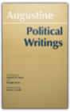
Basic Rights
Henry Shue
0691029296
Which human rights ought to be the first honored and the last sacrificed? In the first systematic attempt by an American philosopher to address the issue of human rights as it relates to U.S. foreign policy, Henry Shue proposes an original conception of basic rights that illuminates both the nature of moral rights generally and the determination of which specific rights are the basic ones.
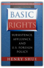
The Riddle of Scheherazade: And Other Amazing Puzzles
Raymond Smullyan
0156006065
“The most entertaining logician and set theorist who ever lived” (Martin Gardner) gives us an encore to The Lady or the Tiger?-a fiendishly clever, utterly captivating new collection of 225 brainteasers, puzzles, and paradoxes.
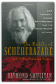
The Tao Is Silent
Raymond M. Smullyan
0060674695
The Tao Is Silent Is Raymond Smullyan's beguiling and whimsical guide to the meaning and value of eastern philosophy to westerners."To me," Writes Smullyan, "Taoism means a state of inner serenity combined with an intense aesthetic awareness. Neither alone is adequate; a purely passive serenity is kind of dull, and an anxiety-ridden awareness is not very appealing."
This is more than a book on Chinese philosophy. It is a series of ideas inspired by Taoism that treats a wide variety of subjects about life in general. Smullyan sees the Taoist as "one who is not so much in search of something he hasn't, but who is enjoying what he has."
Readers will be charmed and inspired by this witty, sophisticated, yet deeply religious author, whether he is discussing gardening, dogs, the art of napping, or computers who dream that they're human.
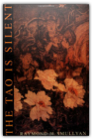
Thoreau: On Man and Nature
Henry David Thoreau
0442824289
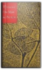
Morality: An Introduction to Ethics
Bernard Williams
0521457297
Bernard Williams's remarkable essay on morality confronts the problems of writing moral philosophy, and offers a stimulating alternative to more systematic accounts that seem nevertheless to have left all the important issues somewhere off the page. Williams explains, analyzes and distinguishes a number of key positions, from the purely amoral to notions of subjective or relative morality, testing their coherence before going on to explore the nature of "goodness" in relation to responsibilities and choice, roles, standards, and human nature.
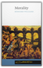